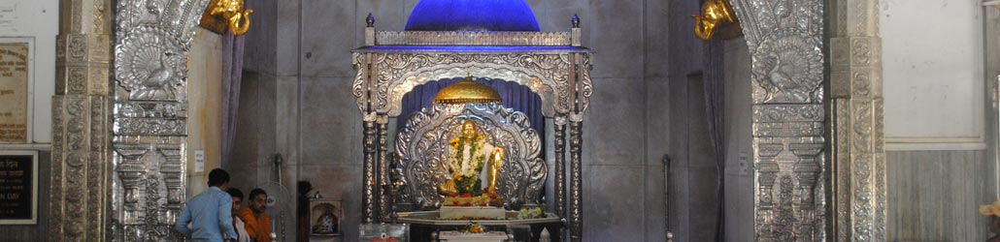

Donation by devotees enable the sanstha to pay its employees, provide facilities, maintain utilities and add to the growing requirement.
Bank: Axis Bank, Ghatkopar (E), Mumbai
A/c No: 029010100244817
IFSC: UTIB0000029
Bank: Bank of Baroda, Ganeshpuri Branch
A/c No: 10640100002070
IFSC: BARB0GANESH
Bank: Bank of Maharashtra, Ganeshpuri Branch
A/c No: 20207200564
IFSC: MAHB0000198
Bank: State Bank of India, Virar (West)
A/c No: 44466497946
IFSC: SBIN0004880
After depositing the amount kindly send the xerox of the bank slip with your name, your address, date and donation type to the below address OR email the details to bhagwan@nityanand.org so that we can send you the receipt of the same.
Secretary
Shri Bhimeshwar Sadguru Nityanand Sanstha,
Ganeshpuri, Dt. Thane-401206 (Maharashtra)
INDIA
Donate by money order, cheque or draft
| Visiting devotees put their cash offering in donation boxes and in kind offering at the office/temple depending on item offered. Any one desiring a receipt or donating by cheque/draft does so in the Sanstha office. |
| Donation by post by money order, cheque or draft should be in favour of "Shri Bhimeshwar Sadguru Nityanand Sanstha" Ganeshpuri and posted to the following address: |
| Secretary
Shri Bhimeshwar Sadguru Nityanand Sanstha, Ganeshpuri, Dt. Thane-401206 (Maharashtra) INDIA |
It will be helpful to sanstha if bank drafts are made payable at the local banks viz Bank of Maharashtra Ganeshpuri Syndicate Bank Vajreshwari
Note: Donation to the Sanstha are Exempt from income tax under income tax act.
Donation Schemes
The devotees may donate to various schemes
| Samadhi Mandir : Various Pooja Donation, Cash Donation, Donation by post as money order, cheque and drafts. |
| Bal Bhojan : Hundreds of children are given a free nourishing meal everyday. Bhagwan loved feeding children. devotees donate generously towards Bal (children) Bhojan (meals). |
| Bhandra(Free Feeding) : Devotees donate depending on their desire for free feeding of nearby poor villages, Sadhus, other mendicantis and poor homeless at Ganeshpuri. Bhandaras are held quite often. |
| Sadhu coupons : Devotees buy Sadhu meal coupons in quantity from Sanstha office (e.g 100; which means 100 Sadhu meals) and distributes it to the Sadhus. The Sadhus present the coupon in the Sanstha Annapurna canteen and enjoy the wholesome meal. |
Note: Sadhu coupons have to be purchased and distributed personally by donor as far as possible.
Donation in kind
The
Sanstha with its multifarious activities uses different kind of material
in poojas, kitchen, buildings, office etc and devotees donate various
things in kind -- too numerous to mention here.
Some examples are given:
Fruits, flowers, sweets, shawl ,dhoti, jewellary like
gold, chain, pearls, necklace, crown, bracelet etc. Sari and adornments
for Bhadrakali temple. Some devotees donate carpets, T.V., music system,
cleaning material, curtain, palki or silver pillar for temple etc.
For Balbhojan healthcare and Annapurna Canteen
Groceries,
utensils, refrigerator, water cooler, water filter, generator,
invertors, electrical bulbs, tubes, cables, switches and emergency
lights. Tables, chairs, musical instruments, office supplies locks & bed
mattresses etc.
Donation of skills
Many devotees like to offer their skills, properties or resources in the seva of Bhagwan Nithayanand. Some like to get a building repaired or painted. Some offer help in constructing Dharmashala. Some desire to get the office renovated. An I.T. specialist offers to put a site on the internet. Some wish to decorate the temple with flower on festival days. Some are interested to provide pack meals to those who are singing for long hours during Namsankirtan. Some devotee like to put up decorative and fancy lights on days like Gurupurnima. Devotee like to volunteer for cleaning and keeping crowds under control on festivals.
Any devotee wishing to offer seva by body, mind, skills or special
materials should meet the secretary of sanstha.